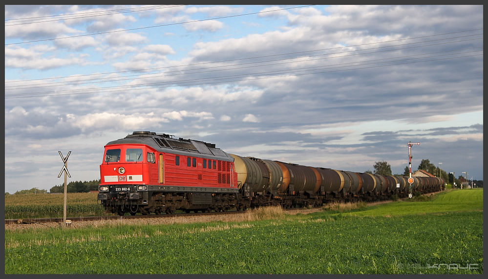

CC Lizenzen
von
»Mach doch was du willst!«
bis
»Nee mach ich nicht!«
Sebastian Mai
2015-01-19

Hallo ich bin Basti!
online: bastinat0r – mit Null
Folien: https://bastinat0r.github.io/cclizenzen
Disclaimer:
Ich bin kein Jurist!
Und ich bekomme leider auch kein Geld für die Werbung die ich hier mache ;)
Wie komme ich dazu was über CC-Lizenzen zu erzählen
Ich höre gern Musik, ich lese gern Texte und ich baue Roboter.

All das kann man auch im Netz39 e.V. machen
Wieso gibt es eine Softwarelizenz für
"Alles außer Software"
Wofür das Urheberrecht erfunden wurde
Photo by Marion Doss/ CC-BY-SA
Wie behandelt man digitale Güter?
Digitaler Güterzug?
Creative Commons als Werkzeug
Creative Commons is a nonprofit organization that enables the sharing and use of creativity and knowledge through free legal tools.- Creative Commons.
3 Ebenen
- Recht
- Menschenlesbar
- Maschinenlesbar
Beispiel
Module
CC
0 – Einschränkungsfrei
BY – Namensnennung
ND — No Derivatives (Keine Änderungen)
NC — Non Commercial (Keine Kommerzielle Nutzung)
SA — Share Alike (Weitergabe unter gleichen Bedingungen)
BY - Namensnennung
best practices
- Titel
- Autor
- Quelle
- Lizenz
SA - Share Alike
Weitergabe unter gleichen Bedingungen. Das gilt auch für Derivate.ND - Keine Bearbeitung
NC - Keine Kommerzielle Nutzung
Faustregel: Wenn man damit Geld verdient ist es kommerziell
Was steht unter CC-Lizenzen?
Musik
- Musikdateien
- Notenblätter
Text
- Bücher (Insbesondere Fach, und Lehrbücher)
- Blogposts
- Wissenschaftliche Fachartikel
- Wikipedia (CC-BY-SA)
- Webcomics (z.B. xkcd)
Bilder
Filme
Podcasts
Strickmuster
Hardware
Veröffentlichungen der USA
Wo bekomme ich neuen Stoff?
Suche
- search.creativecommons.org
- Google Advanced Search
- Am besten sucht man inhaltsspezifisch
Musik
Als coole Alternative zum Kommerziellen Musikstreaming: Jamendo
Besser durchsuchbar und für Samples, Hintergrundmusik etc.: ccMixter
Bilder
flickr, pixabay
Welche Lizenz soll ich benutzen?
Das sollst du selbst entscheiden
Nur dann unter CC-Lizenz veröffentlichen,
wenn euch auch die Rechte gehören!
Die Lizenz kann man nicht zurücknehmen.
Wenn ihr Geld verdienen wollt, dann muss die Lizenz zum Geschäftsmodell passen.
Kritik
Ausbeutung der Kulturschaffenden.
NC
Das Noncommercial Modul ist eine riesige Einschränkung – und noch dazu deutlich schwammig.
Namensnennung ist nicht immer ganz einfach.
Lizenzerhalt und Kombination
Beerware ~> CC-BY-BEER
/* * ---------------------------------------------------------------------------- * "THE BEER-WARE LICENSE" (Revision 42): * <phk@FreeBSD.ORG> wrote this file. As long as you retain this notice you * can do whatever you want with this stuff. If we meet some day, and you think * this stuff is worth it, you can buy me a beer in return Poul-Henning Kamp * ---------------------------------------------------------------------------- */
Creative Commons – Alles was man wissen muss
de.creativecommons.org
Diese Folien
CC Lizenzen - von »Mach doch was du willst!« bis »Nee mach ich nicht!« von Sebastian Mai ist lizenziert unter einer Creative Commons Namensnennung - Weitergabe unter gleichen Bedingungen 4.0 International Lizenz

"Copyright" by xkcd.com / CC-BY-NC